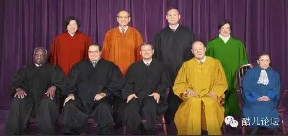
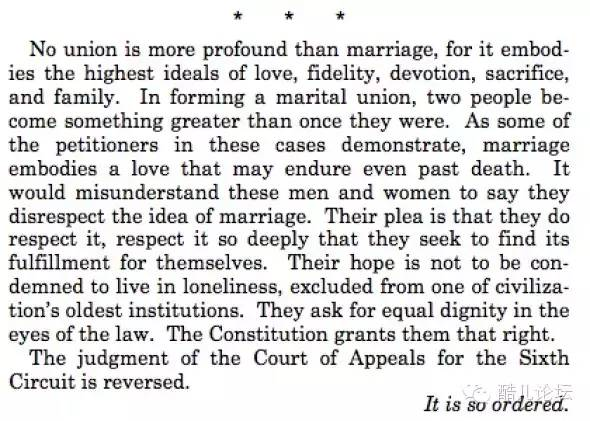

昨天凌晨冒刺君给大家推送了一篇首发在澎湃新闻、关于罗伯茨首席大法官在同性婚姻裁决中的异议的文章的链接，今天冒刺君从作者手中拿到授权啦~现在全文转发出来！欢迎大家到论坛发帖讨论~
6月26日，美国最高法院裁定各州禁止同性婚姻的法律违反宪法，应予废除。保守派大法官罗伯茨的异议意见书成为了流传最广的一份意见书，美国当代最富盛名的法官理查德波斯纳对这份意见书的评价是，“毫无心肝”（heartless），“他们被异议法官所持的歧视所伤害了。禁止同性婚姻就是歧视”。而在本文作者看来，首席大法官的程序诉求是虚假的，他从程序正义等角度详细论述了这一观点。
作者：林垚（哥伦比亚大学政治学系博士候选人）
6月26日，美国最高法院以5：4的票数，在Obergefell v. Hodges案中做出里程碑判决，裁定各州禁止同性婚姻的法律违反宪法，应予废除。消息传来，同性权益的支持者自然欢欣鼓舞，社交网络上随处可见彩虹旗飘扬。但与此同时，几位保守派大法官的异议意见书也在坊间流传，其中尤以首席大法官罗伯茨的异议在中文阅读圈中翻译得最早、传播得最广、得到的附和与赞美也最多。
这与罗伯茨所采取的论述策略有着莫大关系。他的意见书以这样的方式开头：
请理解我的反对意见是什么：这不是有关我是不是认为婚姻应该包括同性伴侣。而是有关这个问题：在一个民主的共和制国家中，这个决定应当属于人民通过他们的民选代表，还是属于五个被授权根据法律解决法律纠纷的律师。宪法对这个问题给出了明确的答案。
又以这样的段落结尾：
如果你是赞成同性婚姻的美国人，不管你是什么性向，请庆祝今天的判决。庆祝你们终于达成了一个渴望已久的目标。庆祝你们获得一种新的表达忠诚的方式。庆祝你们所获得的新的福利。但是请不要庆祝宪法的成功。宪法和同性婚姻完全无关。
将自己的反对意见描绘成对程序正义的呼吁、对“司法霸权”的抵制、对民主合法性的坚持，既从表面上避开了对同性婚姻权实体正义性的徒劳攻击，令首席大法官得以摆出理客中的架子，又迎合了多数中国读者对自身处境的焦虑，与对作为镜像的美国政治理念的想象。中文编译者因此拟定“美国首席大法官对同性婚姻法案的愤怒：宪法与同性婚姻无关”的标题，并加上了这样的按语：“罗伯茨持强硬的保守立场……不过，他在本案中的反对意见因为超越了个人好恶而显得同样强大。这也正是我们全文翻译并特别推荐的理由”。
然而罗伯茨的反对意见真的“超越了个人好恶”吗？他关于程序、关于民主、关于司法立法关系的论述对本案适用吗？他有资格（像中文编译者所设想的那样）对多数大法官的判决表示“愤怒”吗？事实上，倘若我们稍稍了解美国宪政史，并深入到罗伯茨的论证逻辑中去，抽丝剥茧一番，即可发现他的批评意见根本站不住脚。不但站不住脚，恐怕还要狠狠打到他自己——以及其余同样持异议的保守派大法官们——的脸。

高院做的本来就是宪法框架内的事
份内工作当然不算违背程序、破坏民主
我们先来看美国宪法史上两个著名的例子。
在1954年的Brown v. Board of Education案中，高院推翻先例（Plessy v. Ferguson），裁定南方各州公立学校的种族隔离制度违宪。阿肯色州拒不承认高院判决，动用州属国民警卫队阻挡黑人新生入学。艾森豪威尔总统紧急派遣101空降师赶赴州府小石城镇压，同时一纸总统令，将阿肯色州国民警卫队由联邦政府接管整编。当时全国范围内支持废除种族隔离的民意堪堪过半，南方各州则绝大多数人反对废除种族隔离。
在1967年的Loving v. Virginia案中，高院推翻先例（Pace v. Alabama），裁定南方各州禁止非白人与白人通婚的法律违宪，各州必须允许跨种族婚姻。阿拉巴马州对高院判决阳奉阴违，以至于联邦政府几年后不得已又打了一轮官司（United States v. Brittain），才迫使其放开对跨种族婚姻的登记。至于阿拉巴马本州的选民，则直到2000年，才通过州内公投，将州宪法中禁止跨种族婚姻的条款删除。另外，就全国民意而言，1959年支持跨种族婚姻的比例仅为可怜的4%，Loving案判决一年后（1968年）也只上升到20%，远远低于当今民意对同性婚姻的支持率（57%）；事实上，直到1997年，跨种族婚姻的全国支持率才突破半数大关。
很显然，Brown与Loving两案的判决，和当时的民意（至少是南方各州的民意）直接抵触，而且二者所涉皆事关重大，判决引发了严重的社会撕裂与对抗。倘若“法官应当尊重民意、重大问题应当交由民选代表而非少数律师决定”的说法一概成立，则这两个判决也免不了犯同样的错误。事实上，种族隔离制度的支持者们，当年就是用着和今天罗伯茨们一样的话语与逻辑，指控高院罔顾民意、实行司法寡头制、僭夺立法机构职能、践踏州权、破坏民主，诸如此类。
当然，如今绝大多数人——包括罗伯茨在内——都不会再这样认为了；相反绝大多数人都认为，Brown与Loving两案的判决不论在程序上还是实体上均完全正确。正因如此，罗伯茨、斯卡里亚等反对派大法官们，不得不在自己的异议书中绞尽脑汁地将本案（Obergefell）与上述两案撇清关系，论证“司法寡头破坏民主程序”的指控为何只适用于前者而非后者——这一点我后面会再讨论到。这里先问这样一个问题：为什么Brown与Loving两案并不构成对程序正义、对民主合法性的损害？
答案很简单：因为高院做的本来就是宪法框架下的份内之事。美国宪法规定三权分立、联邦主义，在此基础上，Marbury v. Madison案开创了司法审查的传统，最初几条宪法修正案保护公民的个人权利不受联邦政府侵犯，内战后第十四修正案以及相关司法解释又将这些保护从联邦层面拓展到州层面。在Brown案、Loving案、以及本次Obergefell案中，高院运用第十四修正案中的“正当程序条款（Due Process Clause）”与“平等保护条款（Equal Protection Clause）”推翻被其判定违宪的各州（以及联邦）法律，正是高院最核心的职能之一，是整个司法审查流程的题中应有之义；只要高院不在宪法第三条划定的管辖权范围外接受案件、只要高院在判案中紧扣争议内容而不借题发挥，那么其判决在程序上就是完全没问题的。否则，假如连份内的工作都算违背程序、破坏民主，那干脆修改宪法、取消高院得了。当罗伯茨们在异议书中指控多数派法官罔顾民意、僭越立法权时，他们难道想不到，这种指控假如可以成立，完全可以原封不动地用于其它那些自己占了上风的争议判决吗？
自相矛盾的罗伯茨：
如果他在之前的判例中也把程序正义的标准定得这么高
熟悉美国政治的人都知道，这样的争议判决近年来不要太多。略举几例：
2008年的District of Columbia v. Heller案与2010年的McDonald v. City of Chicago案，高院以5：4的微弱多数，一反其长久以来对第二修正案的理解（也是多数宪法学者所持的理解），将持枪权界定为个体权利而非民兵权利，并用第十四修正案的正当程序条款（亦即罗伯茨们此次极力攻击的条款）将此权利拓展到各州层面，推翻地方上的控枪法案；
在2010年的Citizens United v. FEC案中，高院一气推翻若干判例，以5：4裁定，与候选人无直接关联的组织不受竞选开支上限的约束，对其加以监管的法案侵犯了宪法规定的言论自由权（参阅拙文《金钱与选举》http://blog.sina.com.cn/s/blog_68cd22cb01016tip.html及《卡尔·罗夫的失态》http://blog.sina.com.cn/s/blog_68cd22cb01017ju1.html）；
在2013年的Shelby County v. Holder案中，高院以5：4的票数，宣判《选举权法案》中用于衡量各地种族歧视严重程度的条款不够“与时俱进”，因此国会对其续期的做法无效——本案占多数的保守派法官们把自己成天挂在嘴边的“尊重立法机构智慧”的座右铭抛在脑后，浑然不顾法案续期在国会两院中均以几乎全票的高票通过这一事实（参阅拙文《美国大选暗战：“选民证件法”之争》http://blog.sina.com.cn/s/blog_68cd22cb0101c8ky.html）；
在2014年的Burwell v. Hobby Lobby案中，高院仍然是以5：4的票数，裁定盈利性的公司也拥有宗教信仰（一个在哲学上与法律上都极其惊世骇俗的主张），因此奥巴马医保法案中要求所有企业为女性员工提供避孕保险的做法侵犯了企业的信仰自由；
……
以上几桩都是近年来影响重大、极具争议的案例，都造成了自由派与保守派的民意撕裂，而在这些判决中，罗伯茨无一例外地站在占多数的保守派大法官一边。倘若像罗伯茨在本次异议中那样，将程序正义的标准定得如此之高，以至于连同性婚姻判决都通不过检验，那么以上这些判例恐怕要全军覆没。
我们还可以把时间推到首席大法官进入高院之前：
1990年代，高院与国会之间曾经就宗教自由问题展开一场拉锯战。高院先是在Employment Division v. Smith案中，裁定各州有权剥夺出于宗教仪式要求而使用致幻剂的信徒的失业福利（斯卡里亚起草了多数意见）；国会对此强烈不满，通过了《宗教自由恢复法案》作为回应；高院随后在City of Boerne v. Flores案中宣布《宗教自由恢复法案》的相应部分违宪；国会再次回应，于2000年制定了《宗教土地使用与制度化人格法案》，双方争执才告一段落。在这场争端中，高院显然并不认为“尊重民选代表的意见”是其职责所在；
再比如，著名的2000年Bush v. Gore大选计票案，同样是5：4的争议性判决。在宪法明确规定大选“选举人（Electors）”的任命方式由各州自行决定（参阅拙文《选举人团制度简介》http://blog.sina.com.cn/s/blog_68cd22cb01017gz1.html）的情况下，五名保守派大法官（包括此次Obergefell案中起草多数意见的肯尼迪与两位反对派斯卡里亚、托马斯）以“事关重大”为由，强行揽下此案管辖权，又凭空断言佛罗里达州的验票工作无法在预定时间完成，勒令中止正在进行的验票，生拉硬拽地把布什保送上总统宝座，完全改变了二十一世纪美国政治的轨迹；
……
我举出以上这些例子，并不是说它们在程序上都是成问题的——恰恰相反，我认为其中绝大多数（Bush v. Gore可能除外）在程序上完全成立，对判决的所以争议其实都发生在实体层面上，亦即大法官们对宪法中相关权利的理解与阐述是否合理。之所以举这些例子，只是以彼之道还施彼身，说明罗伯茨在指责同性婚姻案中多数派法官“缺乏必要的谦虚和克制、越厨代庖地将自己的道德偏好施加在选民头上”时，是多么自相矛盾、虚伪可笑。
当然，有的人可能会坚持说：司法审查制度本身就是对民主的威胁，能不用就该不用，就算罗伯茨们在过去的判决中罔顾民意、破坏民主，他们能在此次同性婚姻案中幡然悔悟，呼吁将决定权交还人民与民选代表，也算亡羊补牢为时未晚。
司法审查与民主制度的关系，确实是一个可以争辩的议题，这里我无法对此详加讨论。然而即便我们接受这样的假定，认为在同性婚姻问题上遵从民意才是最好的做法，我们同样可以追问：美国民意对同性婚姻的支持率不是早就过半了吗？今年5月22日，爱尔兰通过全国公投修改宪法，将同性婚姻合法化。倘若美国与爱尔兰一样，能够依据公投结果直接修宪，早在几年前同性婚姻就该合法化了，何必等到现在才由高院来裁决？
有些人或许会据此认为美国的宪政框架不够民主、需要改革，但至少罗伯茨肯定不会这样认为；相反他会辩称，既然美国宪法规定，全民公投动议必须由三分之二以上州议会共同提出、公投结果必须由四分之三以上州批准，修宪程序方告完成，则（借用罗伯茨异议书所引用的另一位反对派大法官斯卡里亚异议书中的说法）“那正正是我们政府系统本来的运作方式（That is exactly how our system of government is supposed to work.）”。——可是这样一来就又绕回了前面的问题：高院遵循司法审查传统，根据对相关宪法修正案的理解宣布特定法案违宪，难道不是同样在宪法框架下行事、同样“正正是我们政府系统本来的运作方式”么，怎么到罗伯茨们口中，又成了对程序、对民主的破坏呢？
所以这里其实隐藏着一个严重的逻辑跳跃。尽管罗伯茨声称自己质疑的是判决的程序正义性，并以此获得了不明真相者的欢呼与赞美，但实际上，他的批评归根结底还是要落脚到实体正义层面，落实到对相关宪法修正案——特别是“实体正当程序条款”——不同阐释的合理性的争论上。

正如前面所说， Brown、Loving等判例的存在，对罗伯茨们而言及其棘手，只有想方设法地将其与本次Obergefell案区分开来，他们的批评意见才有可能成立；然而这种区分纯粹从程序的角度又是不可能的，必然要涉及对婚姻权的实体规定。罗伯茨找出的区别是：
先例中没有一个涉及婚姻的核心定义：一男一女的结合。……Loving案中被挑战的法律也没有将婚姻定义为“同种族中一男一女的结合”。去除婚姻的种族限制并没有改变婚姻的意义，正如去除学校中的种族隔离没有改变学校的意义一样。
他认为，由于同性婚姻从根本上挑战了“婚姻是一男一女结合”这一被“南非布须曼人、中国汉人、迦太基人、阿兹特克人”等社会长久以来共同接受的定义，其合法化必将打开一个潘多拉魔盒，导致多偶制等其它婚姻形式的相继合法化；因此，大法官们在考虑是否运用“实体正当程序”等条款、将同性婚姻权纳入“基本权利（fundamental rights）”的范畴加以保护时，必须慎之又慎。
罗伯茨关于婚姻定义的整段论述槽点无数，这里恕不赘述，有兴趣者可参考拙文《同性婚姻的滑坡》（http://www.weibo.com/p/1001603800327903134292）中对此类论述的批驳。不过不管怎样，至少罗伯茨们还明白，Loving等案是其异议意见的软肋，必须竭力处理；而中文网络上不少对罗伯茨大唱赞歌的时评家却完全没有意识到这一点，只知道亦步亦趋，空洞地高呼“程序正义万岁”的口号。
就本文所关心的宪法问题而言，罗伯茨所试图建立的定义区分，作用在于对宪法修正案中实体正当程序条款运用方式的影响。这里他极其阴险地将本次判决与高院历史上最臭名昭著的两个判例——Dred Scott v. Sandford案（确认奴隶主对逃奴拥有产权）与Lochner v. New York案（推翻保障劳工权益的法律）——相提并论加以抹黑（讽刺的是，这两次判决都是保守派大法官的“杰作”），特别是将其与Lochner案相捆绑，声称“只有一个判例支持多数法官今天[运用实体正当程序]的方法：Lochner案”，却完全忘记了他刚刚在上一节意见中与多数法官争论过隐私权（right to privacy）与此案的相关性问题：罗伯茨认为婚姻权与隐私权不同，这当然是对的；但他没有意识到，多数法官将两者类比，并非认为婚姻权来自隐私权，而是强调二者具有共同的道德基础（个体自主性）与共同的宪法阐释方法——隐私权恰恰是高院在一系列案件中通过运用实体正当程序、作为第九修正案所谓“未明确列举的”基本权利而确立下来的，方法与本案如出一辙。
剥开异议书中华丽的辞藻与对涉及实体正当程序的先例的反复援引，可以发现，这里的争论已经不再关乎民主合法性与程序正义，而变成了：大法官们在运用实体正当程序条款、平等保护条款等工具阐发基本权利、推翻既有法律时，究竟应当“谦虚和克制”到什么地步。在这个问题上，司法能动主义（judicial activism）与司法克制主义（judicial restraint）的拥趸已经争执多年，目测还要继续争执下去。
其实，把司法能动与司法克制视为两种必须坚持的“主义”与教条，本身就是大成问题的。就好比勇敢与谨慎，本来就不是互不兼容的处事原则，而是运用之妙存乎一心的美德；倘若固执一端不知变通，勇敢便成了莽撞，谨慎也便成了怯懦。类似地，司法的能动与克制，本来就不可能也不应当有什么一定之规，更多是法官行为气质上的差异，加上具体案例中对各种考量权衡取舍的不同判断。甚至可以说，大多数时候，二者都不过是法官们借以实现自身实体正义观的手段：司法能动主义自不待言，在民权运动中起了无法估量的推动作用；而司法克制主义也不遑多让，历史上长期被出身南方的保守派大法官们用作维护奴隶制、吉姆克罗法（Jim Crow laws）与种族隔离制度的挡箭牌。
这样说显得过于愤世嫉俗，仿佛大法官们的判决都只不过像罗伯茨在其异议中所指责的那样，是花哨的法律术语掩盖下的“出于意愿之举（act of will）”，而非真诚的“出于法律判断之举（act of legal judgment）”。实则不然。罗伯茨将“出于意愿之举”与“出于法律判断之举”，乃是错误的二元划分；真正关键的，也是大法官们在司法审查过程中自觉不自觉地贯彻的，其实是将道德论证、法律解读、现实判断等等各种因素综合考量、力图获得最合理的反思平衡的“出于规范推理之举（act of normative reasoning）”。这一过程当然并不容易，需要具备经得起考验的道德判断、深厚的法律功底与健全的现实感，而且必须做好这样的心理准备：任何暂时达到的看似最佳的平衡，都有可能在未来遭遇新的挑战与修正。
当然，除了法律功底外，最高法院的大法官们也许并没有理由自信在道德判断、现实感等方面一定优于常人——所以在民意面前保持一定程度的谦虚与克制是必要的。但同样地，我们大约更没有什么理由认为，持异议的罗伯茨大法官在这些方面——包括在何时应当谦虚克制、何时应当勇猛精进的判断上——就高于他的同侪。
事实上，无论是从罗伯茨对日常生活中同性伴侣因为缺少婚姻权而遭受的各种伤害的不敏感，还是从其对本次判决可能导致的后果的危言耸听来看，他在同性婚姻问题上显然对现实闭目塞听，做出了错误的判断。
罗伯茨对本案判决后果的危言耸听，在其异议书的最后一节集中爆发：
在这里以及在很多地方，人们都在进行严肃和深入的关于同性婚姻的公共讨论。他们看到选民们仔细的思考同性婚姻议题，投同意或反对票，有时候改换主意。他们看到政治家们同样不断的去思考自己的立场，有时改换方向，有时坚持己见。他们看到政府和企业修改自己有关同性伴侣的政策，并且积极参与讨论中。他们看到了其他国家民主接受剧烈的社会变动，或者拒绝这么做。这样的民主思辨的过程让人们仔细思考一些他们之前都不会认为是问题的问题。……
但是今天的最高院停止了这一切。通过宪法解决这个问题，将此问题从民主决策中完全剥夺了。在如此重要的问题上终结民主进程，是会带来严重的后果的。终结辩论会带来闭塞的思想。被阻碍发声的人们更加难以接受法院在此问题上的判决。……不管今天同性婚姻的支持者们多么欢欣鼓舞，他们应该意识到他们已经永远失去了一个真正获得承认的机会，这种承认只能来自于说服其他公民。正当改变的清风轻抚过他们的发髻的时候，他们已经失去了这一切。
这些绘声绘色的预言看似靠谱，实则根本经不起推敲。
民主社会的公共讨论是一个永不停息的过程，只要言论自由还在，就没有任何一个法院判决会终结民主思辨、阻止反对者发声、导致思想的闭塞，也没有任何一个法院判决会让支持者“永远失去[通过说服其他公民而]真正获得承认的机会”：
Brown案并没有阻碍人们认识到种族隔离制度的不义：判决之后的四十年里，支持废除种族隔离的比例从约50%稳步上升到90%左右；
Loving案并没有令跨种族婚姻失去获得民意承认的机会：与当年举国上下反对跨种族婚姻相比，如今反对者仅剩全国的10%上下；
裁定女性拥有堕胎权的Roe v. Wade案并没有阻碍反对者发声：判决下达后，保守派掌权的各州出台了千奇百怪的限制堕胎的法案，而自由派则一面在政治上对抗这股逆流，一面从法理上反思堕胎权的基础——越来越多人认为，堕胎权的支持率徘徊不前，不是因为高院当年“强行”赋权，而是因为其在进行规范推理时选取了过于狭隘的路径，仅仅将堕胎权奠基于运用“正当程序条款”得出的“隐私权”，而非运用“平等保护条款”得出的、与性别平等密切相关的女性身体自主权；正因如此，本次同性婚姻权判决中，多数派法官将正当程序条款与平等保护条款并举，才有着格外重要的意义。
其实，高院的判决不但不会阻碍同性恋者“真正获得承认”，反而很有可能加速这一进程。之所以如此，是因为社会观念的变迁本身就是多种因素交错的复杂过程，其中民主思辨与公共讨论固然重要，但理性之外的各种习得与内化同样起着不可或缺的作用。毕竟不管什么人，总会因为认知上与经验上的局限，而有着这样那样光靠冷冰冰的说理无法抚平的固执、偏见与恐慌。一位恐同者，或许可能仅仅通过阅读与辩论，而放弃对同性恋者的偏见；但更常见的情况是，因为身边有朋友亲人出柜，而受到直接的震撼与冲击，又或者因为与同性恋邻居、同事低头不见抬头见，而渐渐在情绪上对同性恋不再抵触，最终接受其为正常的生活方式。
这些年来美国民意对同性婚姻的态度整体上急速转变，但部分地区的民意却转变得远为缓慢。根据皮尤中心的调查，从2001年到2015年，全国民众支持同性婚姻合法化的比例从35%跃升到57%，但白人福音派、共和党、保守派（这几个范畴在很大程度上重叠）中的支持率却只在30%上下。这一方面是因为意识形态的影响，另一方面也是因为保守州既有的歧视，使得当地的同性恋人士更少出柜，普通人对同性恋更缺乏了解与接触。目前，在这类人抱团的州（也就是禁止同性婚姻的州），反同言论才是主流，外界的批评遭到敌视与抵制。假如高院不介入，仅仅寄希望于“民主思辨”和“公共讨论”来说服保守的当地人转变观念，恐怕很长一段时间里无异于痴人说梦。
相反，随着高院的判决迫使这些州承认同性婚姻，同性伴侣将越来越多地走进当地普通人的日常生活，可以预见，他们的喜怒哀乐将越来越被当地人熟悉，他们的爱恨情仇将越来越被当地人了解，他们的存在也将越来越被当地人习惯与接纳——就像种族隔离壁垒的消失、不同种族之间交往的日益频繁，使得人们对当年废除种族隔离制度的判决越来越支持一样。说不定，随着时间的推移，我们还可以等到首席大法官勇敢地站出来，对自己当年在异议意见书中用自相矛盾的程序正义论述掩盖对同性恋的歧视的做法，真诚地表达悔意与歉意。